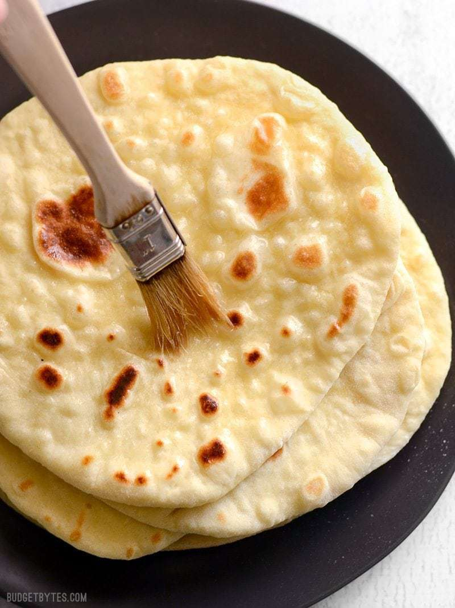

CHICKPEA CURRY RECIPE

DIFFERENCE BETWEEN NAAN AND PITA
Naan is a traditional flatbread made in South and Central Asian
countries, while pita bread is eaten in the Mediterranean and the Middle
East.
INGREDIENTS
- 2 tsp dry active yeast
- 1 tsp sugar
- 1/2 cup warm water
- 2 1/2-3 cups flour, divided
- 1/2 tsp salt
- 1/4 cup olive oil
- 1/3 cup plain yogurt
- 1 large egg
INSTRUCTIONS
-
In a small bowl, combine the yeast, sugar and warm water. Stir to
dissolve then let sit for a few minutes or until it is frothy on top.
Once frothy, whisk in the oil, yogurt, and egg until evenly combined.
-
In a separate medium bowl, combine 1 cup of the flour with
the salt. Next, pour the bowl of wet ingredients to the flour/salt
mixture and stir until well combined. Continue adding flour, a half
cup at a time, until you can no longer stir it with a spoon (about 1
to 1.5 cups later).
-
At that point, turn the ball of dough out onto a lightly floured
surface and knead the ball of dough for about 3 minutes, adding small
amounts of flour as necessary to keep the dough from sticking. You'll
end up using between 2.5 to 3 cups flour total. The dough should be
smooth and very soft but not sticky. Avoid adding excessive amounts of
flour as you knead, as this can make the dough too dry and stiff.
-
Loosely cover the dough and let it rise until double in size (about 1
hour). After it rises, gently flatten the dough into a disc and cut it
into 8 equal pieces. Shape each piece into a small ball.
-
Heat a large, heavy bottomed skillet over medium heat. Working with
one ball at a time, roll it out until it is about 1/4 inch thick or
approximately 6 inches in diameter. Place the rolled out dough onto
the hot skillet and cook until the bottom is golden brown and large
bubbles have formed on the surface (see photos below). Flip the dough
and cook the other side until golden brown as well. Stack the cooked
flat bread on a plate and cover with a towel to keep warm as you cook
the remaining pieces. Serve plain or brushed with melted butter and
sprinkled with herbs!